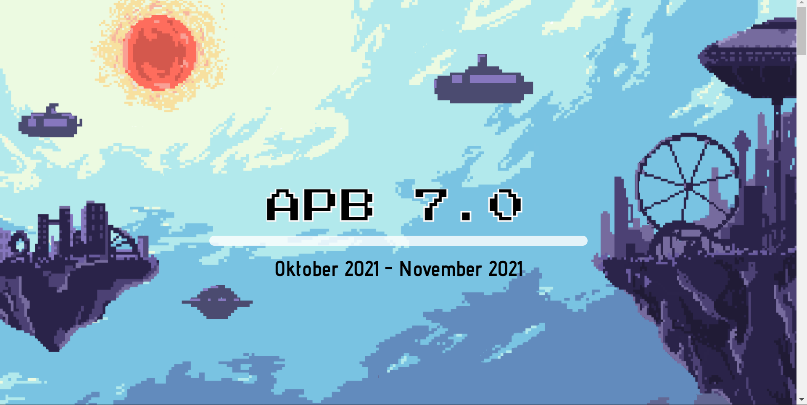
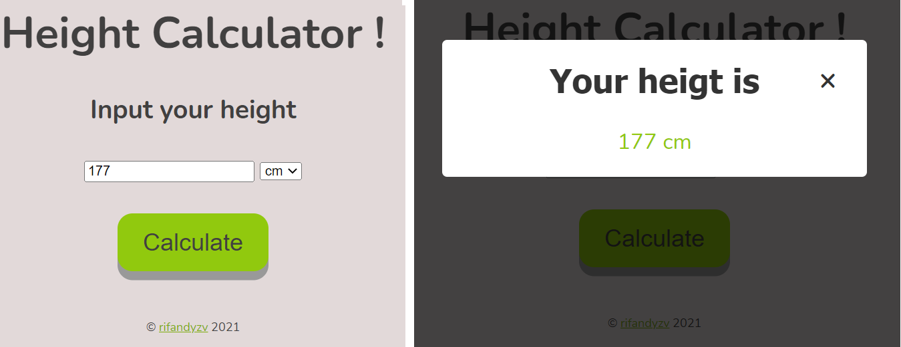

Aku Pasti Bisa 7.0 Landing Page

APB HMIF is an annual programme to spread computer sciences and
computational thinking for free to junior high until undergraduate
students in Indonesia. I lead the developer team to create a landing
page for this event. Created using React JS the development process
was implementing GitFlow Workflow, CI/CD using github action and the
page deployed to Github Pages using custom domain
Keclap
Keclap nyeta ulinan web anu tujuanna nebak kecap Basa Sunda genep
hurup tiap poena. Ulinan ieu terinspirasi ti ulinan sapartos Wordle
sareng Katla. Ulinan ieu dikembangkeun tina proyek open source React
Wordle. Kecap-kecap sunda dikukutan (scrape) tina kamus Sunda online
nganggo Python (Beautiful Soup). Lamun aranjeun panasaran, mangga
langsung tiasa diulinkeun wae sareng tong hilap disebarkeun ka
babaturan di sosial media.
Github Repository
Disney+ Hotstar Watermark Remover
A simple straightforward Chrome Extension that was built with only one
line CSS to remove Hotstar watermark while watching some movies/series
in Hotstar/Disney+ Hotstar. I created this to solve my discomfort to
see a watermark while watching some movies/series
Github Repository
Height Calculator

First hands-on experience with web development using HTML, CSS and
`vanilla` Javascript. This project is inspired with famous meme
program that let the user input their own height and the program will
return the display of value that have inputted.
Github Repository
Fullstack Web-App using React, FastAPI, MariaDB and Docker
This project was created using FastAPI, React JS with NGINX, MariaDB
and Docker. I Learned how to use Docker to create container images,
configure docker compose and create connection pools in two days. At
first, I used PostgreSQL as the database but I found some challenge in
the development process and found that PostgreSQL's Container isn't
stable yet.
Github Repository
Youtube
ESP-32 Projects
These are my journey to learn to program a micro-controller. I used
ESP-32 as micro-controller and program some basic stuff on ESP-32. I
wrote all of my ESP-32 learning journey in Medium so you guys can
check it out!.
Medium
Simple URL Shortener
My second hands-on experience for web development. I designed a simple
web frontend with HTML, CSS, Bootstrap and Javascript HTML DOM, and
also created a simple CRUD API using Express JS that connected to
MongoDB as a database.
Github Repository
NBA Players API

It'is a CRUD API using Express JS and MongoDB. The data was crawled
using Python script from the NBA's players website. In this project, I
learned how to create CRUD API using Express JS in less than a week,
by reading Express JS Documentation, some Youtube tutorials, and
implementing it into this project.
Github Repository
Ethereum Smart Contract
This is my Web 3.0 first hands-on project to create a Smart Contract
on Ethereum Blockchain, made by HardhatJS and Solidity. I learned this
via a community called BuildSpace. This simple Smart Contract is
developed to let somone to send me a wave via Ethereum Blockchain.
Github Repository
Etherscan